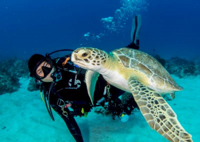

patowmack divers
Following club business, Ernie Franklin will give a presentation about the activities of the Diving with a Purpose (DWP) organization. DWP (https://divingwithapurpose.org/) is a leading international organization that provides education and training programs, mission leadership, and project support services for submerged heritage preservation and conservation projects worldwide with a focus on the African Diaspora.
Born in Michigan, Ernie Franklin (https://uasdivers.org/ernie-franklin/) was scuba certified by the Under Water Adventure Seekers Club (UAS) of Washington DC. The Underwater Adventure Seekers Club created in 1959 is the founding club of the National Association of Black Scuba Divers A graduate of the Tuskegee Institute, he's a PADI certified Open Water Dive Instructor, a Scientific Diver for both NOAA and for the American Academy of Underwater Sciences (AAUS) and Education Director for the Youth program at Diving with a Purpose.

Also, since we recently had a presentation on Great Lakes diving, club members might find these two links interesting reading:
https://oceanexplorer.noaa.gov/explorations/18aviatorsdown/welcome.html
https://www.pressandguide.com/2021/09/23/lake-huron-red-tails-recovering-michigans-history-of-the-tuskegee-airmen.
Macro photography in South Florida by Ariane Dimitris. Following club business, Ariane Dimitris will present. Ari is an avid diver and underwater photographer in South Florida. She will present macro shots from her many diving adventures.
Divers know our reefs are under threat, but you can help protect them (and yourself) every time you apply sunscreen. Ingredients like oxybenzone, parabens and mineral oils in sunscreens and body-care products can harm our oceans, rivers, lakes and streams. Studies have shown that coral-reef damage can be caused by these ingredients and they are making their way into the waterways and popular reefs in surprisingly high concentrations. Join us as we welcome Mike Materre, Vice President of Stream2Sea, who will tell the story of the development of this reef-safe sunscreen and body-care products company founded in 2015 by Autumn Blum, a cosmetic chemist and scuba diver. Where: Zoom information will be sent at a later time.
For some background information, there an article from the MIT alumni association here
Mike Evermore will discuss invasive species in quaries.
After club business, Sandra Edwards will show pictures from under the Blue Heron Bridge in West Palm Beach. The water under BHB abounds in small creatures such as nudibranchs and Sandra has spent many productive dives finding them and photographing them. See her pictures on Facebook's Underwater Macro in the Americas group.

After club business, our own Gloria Freund will unveil the new director’s extended cut of “Carnal Capers of the Giant Cuttlefish.”
Our January meeting was canceled. Gloria's presentation will be at our February meeting.
After club business, our own Gloria Freund will unveil the new director’s extended cut of “Carnal Capers of the Giant Cuttlefish.”

 Follow us on Facebook!
or email us at "dive at patowmackdivers.com" replace at with @
Follow us on Facebook!
or email us at "dive at patowmackdivers.com" replace at with @
Copyright (c) 2011-2023 Patowmack Divers.com. All rights reserved.